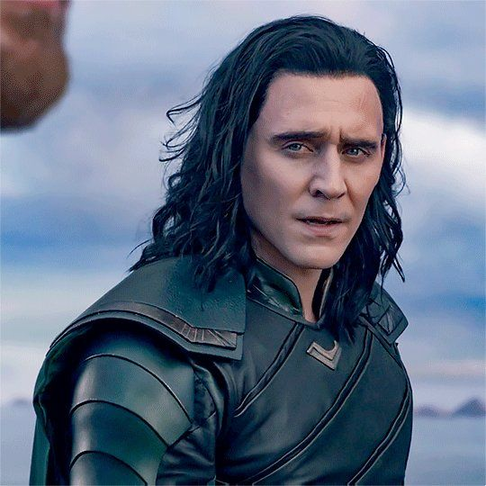
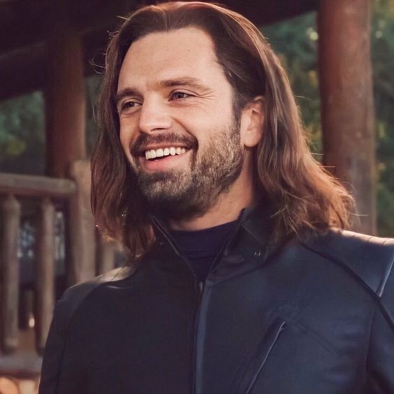
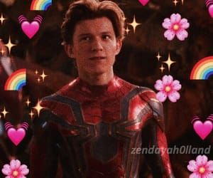
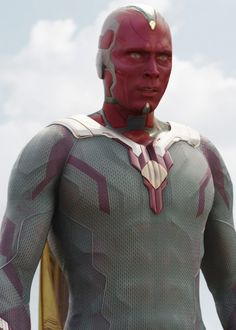

🎬✨More Characters!✨🎬
Hello!, This page will be talking about the other characters that are an important piece of the marvel universe
and their interactions with the other main characters. Some of these characters would be classifed as a villian but
Marvel classifed them as heroes because of their back story!.
💥 - click here to return home!
🳠- click here to see even more characters!
✨🐍Loki✨🐍
Loki is the younger brother of Thor and he creates a lot of trouble for the Avengers. His presence is major in the first avengers movie when he attacked New York City in the first avengers movie!.
He is the god of mischef and his powers are super complex and limitless!. His backstory is sad and has really shaped into the man he is today. His relationships with his parents were complicated, his mother
really cared for him and wanted the best for him. While, his father had turned onto him and became emotionally abusive towards him and cared for his older brother Thor more. Also to mention, he is adopted
into the family when he was found in a plant where Frost giants live and he was taken and grew up with Thor and his mother and father. He's father essentially lied to him about the Frost Giants which caused even more
damage to him resolving in him becoming a villian.

✨💣🔪⛓🖤Bucky✨💣🔪⛓🖤
Bucky is Steve's best friend and they had become friends before Steve had become Captain America. Bucky and Steve had fought together in World War 2, and during an attack Bucky had fallen out of a train and had been M.I.A a long time. During Captain America: Civil War
Bucky comes back and Steve tries to get him to remember their friendship through the movie but can't because Bucky has been brainwashed since he fell of the train. He then became an assain for Hydria came years later and created conflict between the Avegners thus creates the plot for
Captain America: Civil War.

🕸✨Spiderman🕸✨
Spiderman is a popular character in the Marvel Universe and is own by Sony (which is long thing so you'll have to look it up in your own time)
He has spider superpowers such as creating webs, having a six sense, and swinging from building to buidling. He's close relationship is with Tony, their relationship
was seen as a father-son relationship where tehy care for each other and look after each other, we can see this relationship in the Spiderman movies,
Spiderman: Homecoming, Spiderman: Far from Home, and Infinity War ( there's a small bits and pieces through Endgame where you can see more of their relationship)

✨ğŸ±Black Panther✨ğŸ±
Black Panther or T'Challa is a Wakandian Prince who rules over Wakanda, he gets his superpowers from a plant that grows in the garden that is below the palace.
Wakanda is also known for its Vibranium that is the World's Strongest Metal. Black Panther also has the role of being the king of Wakanda.

✨🧙ğŸ»â€ Doctor Strange ✨🧙ğŸ»
Doctor Strange is a wizard with special powers to control time and space. He was originally a surgen who lost his ability to do perform when he got into an accident.
He went searching for help before he had come to a point where he was able to come focused on his ability to control his powers and thus became Doctor Strange.

✨❤️ Wanda Maximoff✨❤️
Wanda Maximoff is the sister of Pietro Maximoff and they both were born in Sokovia (a fictional place of course). They were used a science experient that was used by High Evolutionary to use their powers against the Avengers.
They both later realized that they would use their powers for hurting others not justt against Tony Stark and the Avengers. The reason behind them originally siding with the bad guys, Starks technology had brought mass destruction which brought their dislike towards Stark.

✨💛 Vision ✨💛
Vision, who is a superhuman/bot, was created in Avengers: Age of Ultron, and had come the living human of Jarvis (Tony's Computer System).
